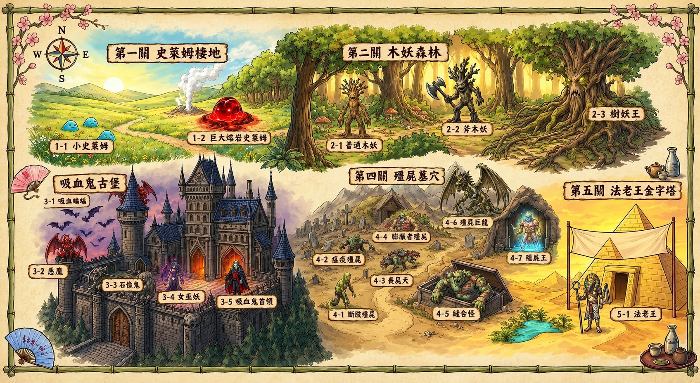

💰 0
加法勇者傳說
主角設定： 冷酷銀髮勇者，右眼戰術眼罩，手持黑曜石雙刃鐮刀，手臂閃爍紅光咒印。
遊戲規則： 擊敗地圖上5大地形的魔王！
✨ 魔王10滴血，答錯加0.5血。
✨ 勇者4滴血，答錯扣1血，限時60秒。
✨ 時間加成： 10秒內答對攻擊x2，20秒內x1.5。
✨ 道具： 連對5題獲得「甦醒藥」(死後自動滿血復活)。
挑戰全關卡 5 星評價吧！
🌍 浮空島嶼遺跡 - 關卡選擇
點一下發亮的關卡，勇者就會走過去！

勇者 HP: ❤️❤️❤️❤️
🧪 甦醒藥 x1
關卡 1-1
第一關 史萊姆棲地
魔王
10 / 10
加法勇者
連擊: 0
1 + 1 = ?
剩餘時間: 60s
準備戰鬥！
史萊姆
我的答案
?